Contact me
mail: aymeric.camaret@ik.me
discord: t0qen
Fetching informations ...
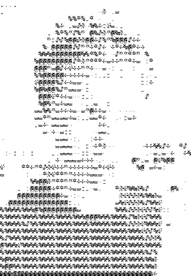
Name: Aymeric (known as t0qen)
Gender: XY
Uptime: 16 years
Locale: fr_FR
Studying: Engineering
Github: github.com/t0qen
Hobbies: Electronics, robots, programming, Linux, and self-hosting
Open to work: Yes, contact me
Fetching informations ...
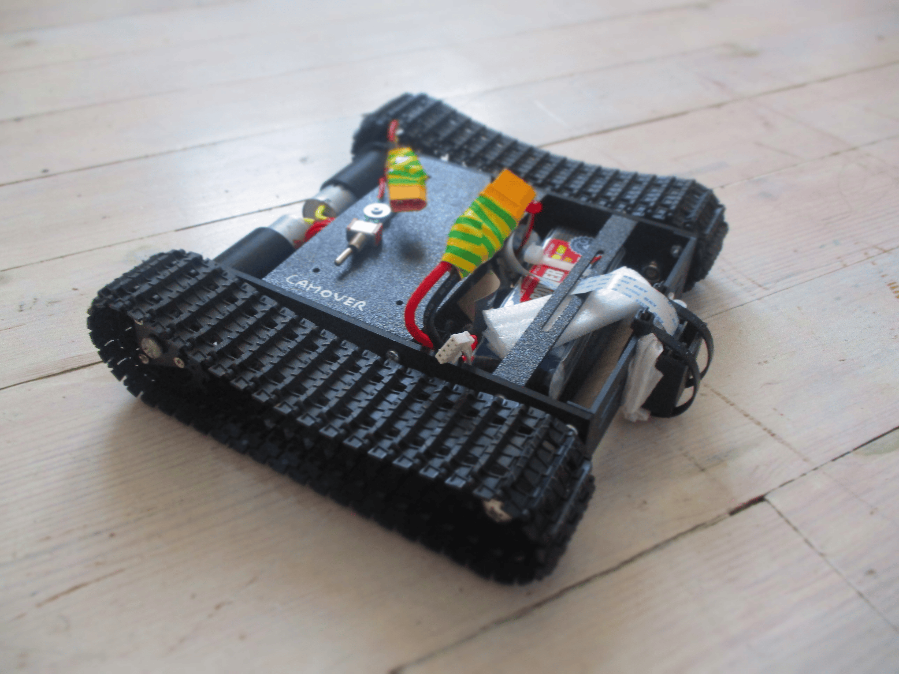
CAMOVER
python, html/css/js via Flask
A tiny real tracked robot remotly controllable from anywhere in the world throught an easy-to-use website. It is based on a RPI Zero 2W, with secured power management thanks to an esp32c3 and notifcations. Next step is to make it easier to control when there are several people connected at same time.
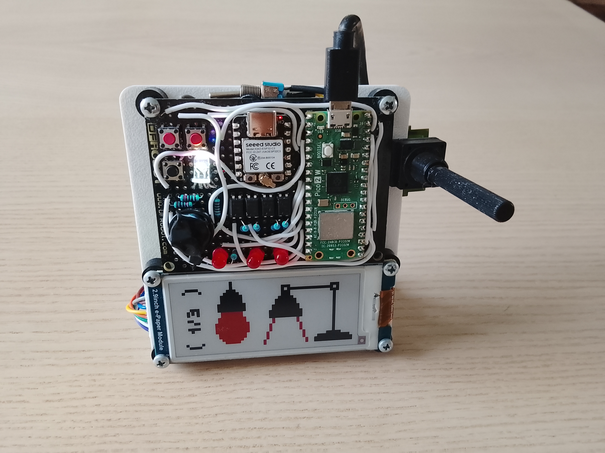
BEDROOM DASHBOARD
micropython, c/c++ (platformio)
A "macropad" to control everythings connected in my bedroom throught home assistant. It's able to precisly controls lights, rbg leds, power sockets, music volume, all of this thought Home Assistant and Music Assistant. Leds and buzzer feedbacks. It has also the functionnality to control chip 433mHz power sockets by hacking the remote.
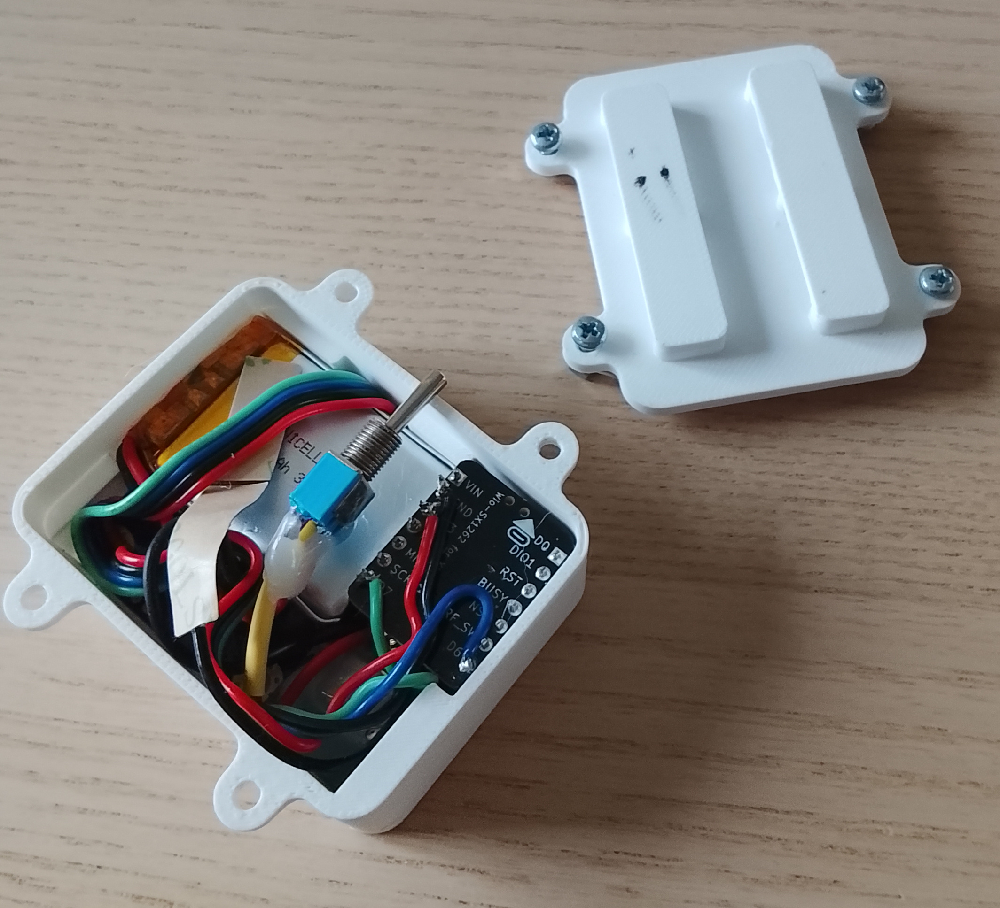
GPS CAT COLLAR
meshtastic
A tiny private meshtastic node with a XIAO, to help me find my young cat when she goes out. The tracker sends position to a Lora node in my house which also sends position to Home Assistant. The hard part has been to make it the smaller and safer possible.
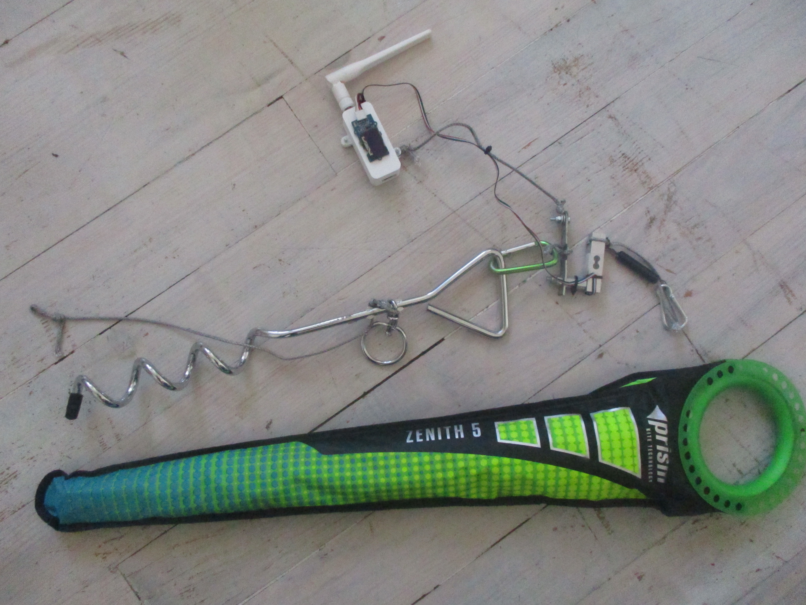
BEACH WEATHER PROBE
c/c++ (platformio), flux (grafana)
Use a kite to measure wind force, instead of using anemometer. It uses a load cell and sends data to a Grafana instances on my server where we can analyse in several ways the data. The future plan is to let it on the beach on an afternoon and know anytime how the wind is.
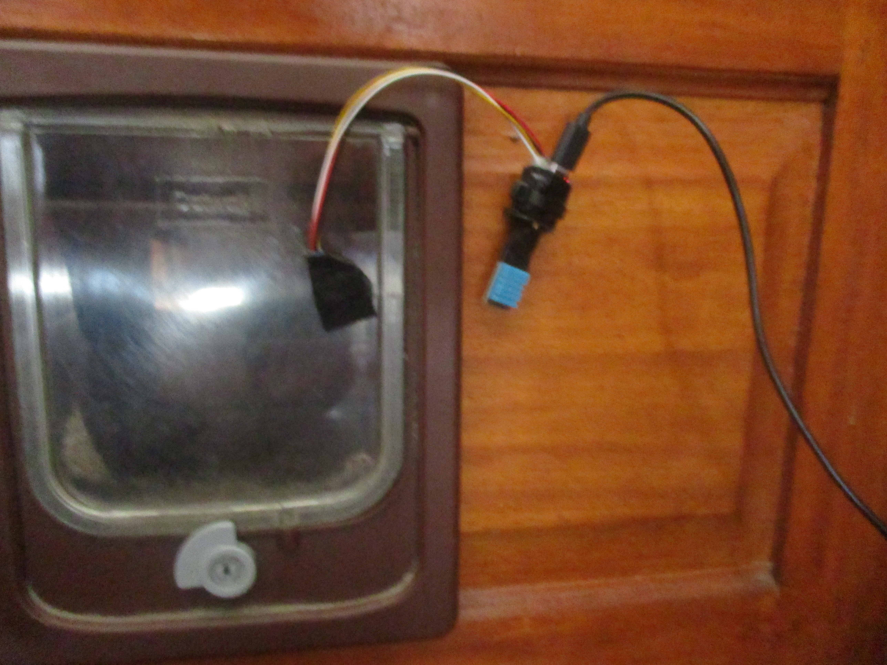
CONNECTED CAT FLAP
c/c++ (platformio)
A simple project that detects when my cat flap opens and send me a notification, no matter where I am in the world. It also sends the number of time it opens per day to my home assistant server. Useful ? No. Funny and time consuming ? Yes.
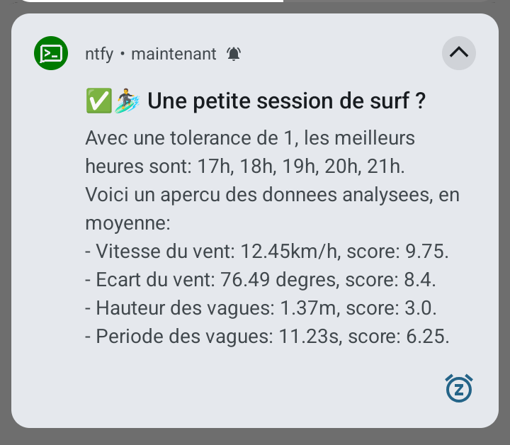
SURF REVIEW
python
A script that runs everyday and scores the current meteo conditions for surfing. Send a notification with the result. I am still using it today and it saves me time.
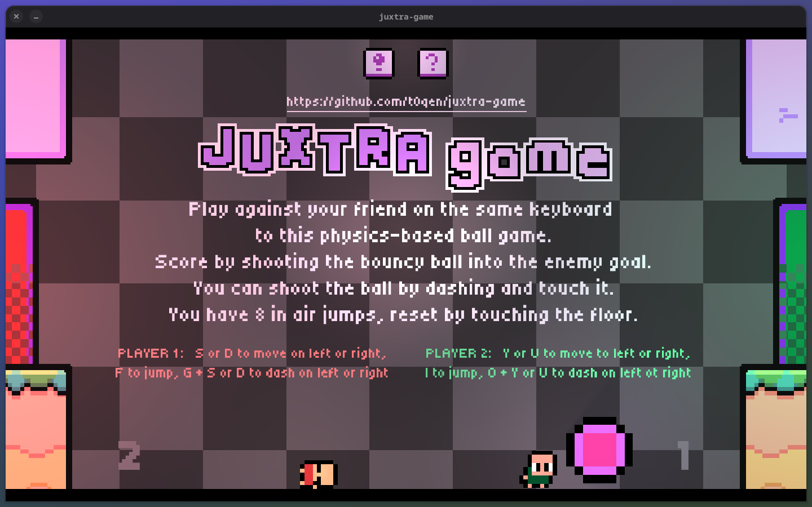
JUXTRA GAME
godot 4, gdscript
A 2d soccer game with advanced moving and physics features inspired by Rocket League Sideswipe. Art by @leynoo. Made it to play with my friends (it never happened). It has been really fun to make though.
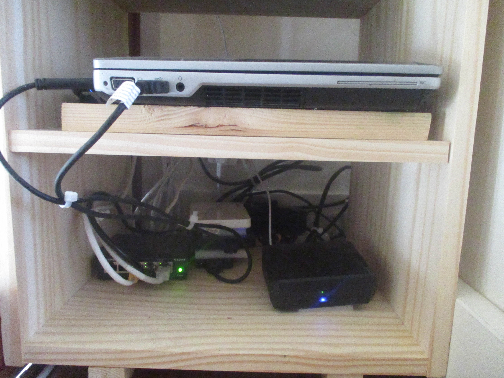
HOMELAB
docker, docker compose, bash
Two servers on my house that hosts a lot of things I use everyday and which fosters my digital independence. This website is for example hosted on it.
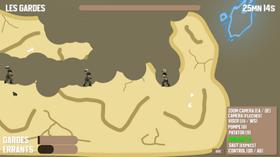
BAUDO'S AUTUMN GAME JAM (2025)
godot 4, gdscript
Finished 20th on 69 submissions. With the team Alt-F4. Inspired by WORMS. Same as the first gamejam, it was sometimes hard to merge our ideas together, but it was a really good experience. We didn't have enough time to finish the art, but the code is almost stable.
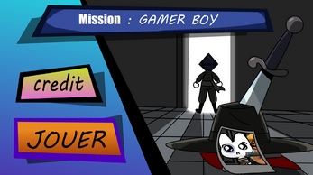
BAUDO'S SUMMER GAME JAM (2025)
godot 4, gdscript
Finished 5th on 94 submissions. Art by @OBCD, music by @DarkPhoenix3254 and the two developpers: @Als and me. We were forming the Alt-F4 team. This one week gamejam teachs us how to work together on the same project (git has been useful).
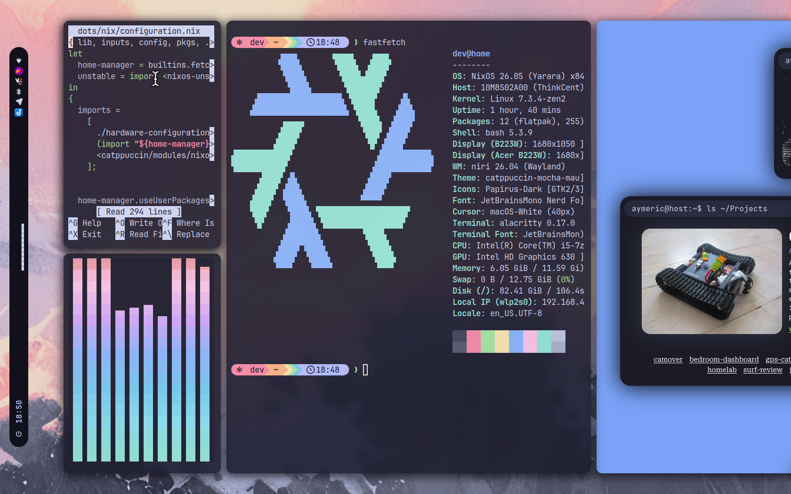
CATPPUCCIN DOTFILES
nixos (linux), random config
Someone says Nixos ? A simple and efficient Niri rice matching the famous catppuccin color palette, creating a cosy and replicable desktop. It aims to be the stablest as possible without sacrifising the looks and the responsiveness.
Fetching informations ...
LANGUAGES
COMPUTERS
DIY AND MAKING
Fetching informations ...